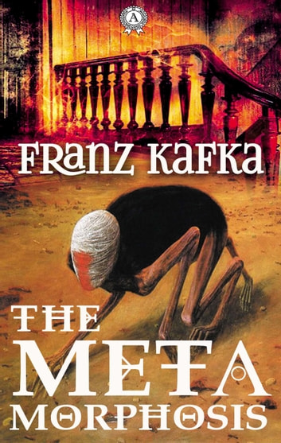
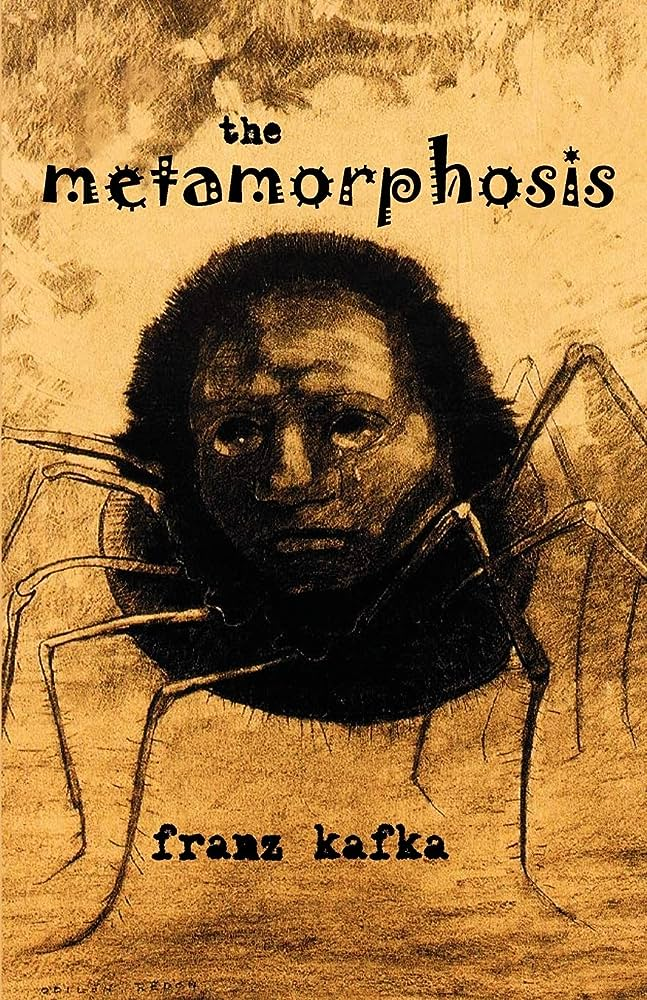
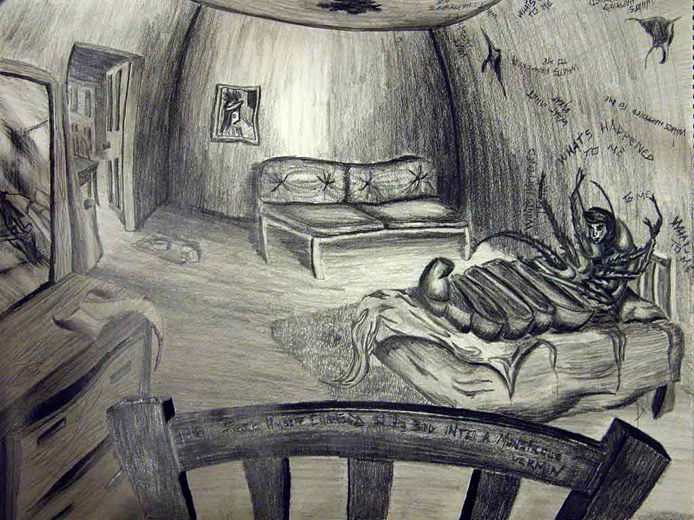
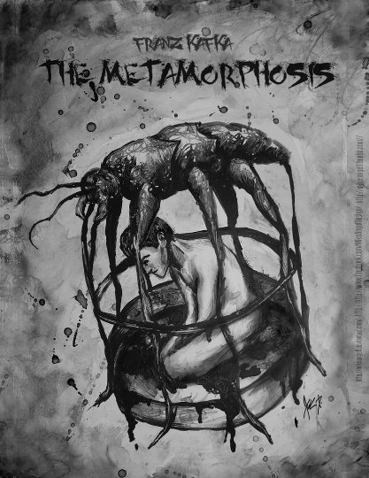

<!---RMIT University Vietnam
  Course: COSC2430 Web Programming
  Semester: 2023
  Assessment: Assignment 1 - Static Website
  Author: Pham Minh Quang
  ID: S3978814
  Acknowledgement: Book Detail Page--->
  <!DOCTYPE html>
<html>
<head>
    <title>Book Details Page</title>
    <meta name="viewport" content="width=device-width, initial-scale=1">
</head>
</html>
<meta name="viewport" content="width=device-width, initial-scale=1">
  <link rel="stylesheet" type="text/css" href="booksdetail.css">
  <link rel="stylesheet" href="https://cdn.jsdelivr.net/npm/@fortawesome/fontawesome-free@6.2.1/css/fontawesome.min.css">

</head>
<body>
    <section class="header">
        <nav>
            <a href="index.html">
            </a>
            <div class="nav-links" id="navLinks">
                <i class="fa-solid fa-x" onclick="hideMenu()"></i>
                <ul>
                    <li><a href="index.html">HOME</a></li>
                    <li><a href="best.html">BESTSELLERS</a></li>
                    <li><a href="philoshophy.html">PHILOSOPHY</a></li>
                    <li><a href="neuroscience.html">NEUROSCIENCE</a></li>
                    <li><a href="contact.html">CONTACT</a></li>
                </ul>
                
            </div>
            <i class="fa-solid fa-x" onclick="showMenu()"></i>
        </nav>
        </section>
        <!---JavaScript--->
<script>
            var navLinks = document.getElementById("navLinks");
            function showMenu(){
                navLinks.style.right = "0";
            }
            function hideMenu(){
                navLinks.style.right = "-200px";
            }
</script>
<section class="det">
    <h2><a href="index.html">Home</a> > <a href="best.html">Bestsellers</a> > The Metamorphosis</h2>
    <div class="desc">
        <div class="imga">
            
        </div>
        <div class="timg">
            
            
            
            
        </div>
        
       
        
    </div>
    <div class="money">
        <h1>$20</h1>
    </div>
    <button class="button">Purchase</button>
    <h1>The Metamorphosis</h1>
    <p>Kafka’s Metamorphosis is a magical realist, allegorical tale that touches on the theme most central to us all—that of struggling to find and express one’s own identity in a world of ever-present, all-consuming obligations. As this short essay will explore, the reader leaves the novel feeling unsettled and unsatisfied, imprinted—one might even say scarred—with the message that sometimes the world one lives in makes it impossible to ever express that identity and to have it understood.</p>
    <p>The novella opens with a most preposterous scenario, immediately testing, and seeking to expand, the reader’s ability to suspend disbelief. 
        We glean from this opening series of events that Kafka presents Mr. Samsa as a man so utterly controlled by the obligations of his life that his own identity—to the point of his very being as a human—became lost in the mix. Indeed, Kafka sustains this message by maintaining a shroud of mystery around just what Mr. Samsa has become. In the English translation, Mr. Samsa as presented as a “vermin,” “insect,” “dung beetle,” and “bug,” at various points, but the reader never learns for sure. In fact, Kafka was deliberately ambiguous, writing in a letter to his editor before publication that “the insect is not to be drawn,” so that the reader may form his own image (Jones, 2015). 
    </p>
    <p>A brief review of Kafka’s family and the context of his life provide added weight to this suggested theme. Indeed, according to those who knew and have studied him, Kafka felt a strong “sense of personal weakness and failure,” and resented his day job as a lawyer and as a bureaucrat with the Workers’ Accident Insurance Institute (Breckman, 2000). Just as Mr. Samsa, it seems that Kafka himself struggled to establish his identity—wanting desperately to please his father with his writing, but failing—and devolved into self-loathing. Perhaps Kafka viewed himself as a grostesque alien creature, distant from his family, and fretting about the fiscal obligations around him that he believed prevented him from enjoying his life. In that way, the realist element to Kafka’s magical realist tale comes from his own perspective on his life. While deeply autobiographical in this sense, The Metamorphosis is a tale to which all can relate, as it reminds us powerfully of the glaring monsters within us that we create to shield ourselves from the world.  </p>
         <br>
</section>

</body>
<footer>
    <nav>
        
        <div class="footer-nav-links">
    
            <a href="about.html">ABOUT US</a>
            <a href="privacy.html">PRIVACY POLICY</a>
            <a href="terms.html">TERMS OF USE</a>
            <a href="contact.html">CONTACT US</a>
            
        </div>
    </nav>

</footer>
</html>